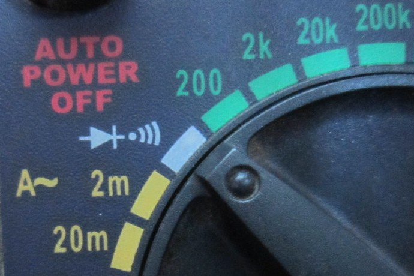
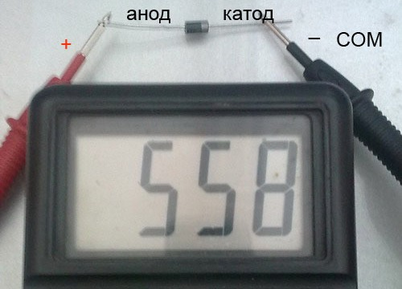
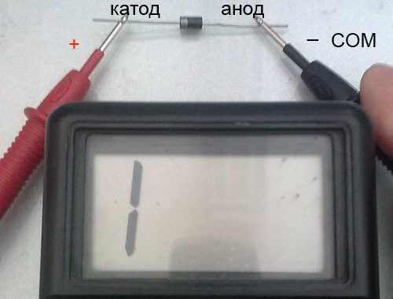

Проверка исправности диода
- Установите переключатель мультиметра на условное обозначение диода.
Внимание! Во время измерения нельзя держать выводы диода и щупов мультиметра двумя руками.

Рис. 1 - Положение переключателя мультиметра при проверке диода
- Проверьте диод в прямом включении: красный щуп (плюсовой) мультиметра подключите к аноду диода, чёрный щуп (минусовой) - к катоду диода. На дисплее должен показать пробивное (пороговое) напряжение диода (рис. 2), т.е. напряжение, при превышении которого p-n-переход открывается. Это напряжение лежит в пределах 100 – 800 мВ.

Рис. 2 - Проверка диода при прямом включении
- Проверьте диод в обратном включении: красный щуп подключаем к катоду, а чёрный - к аноду (рис. 3). Мультиметр должен показать "1" - это свидетельствует о том, что диод не пропускает ток и его сопротивление велико.

Рис. 3 - Проверка диода при обратном включении
Неисправности диода:
- Пробой. В прямом и в обратном включении на дисплее показывается величина близкое к нулю.
- Обрыв. В прямом и в обратном включении на дисплее показывается «1».
Источники:
1posvetu.ru - Проверка диодов мультиметром: тонкости от мастеров